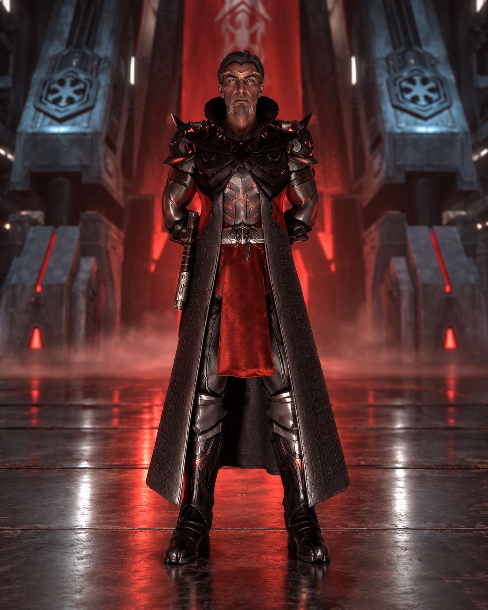

Dans les profondeurs obscures de l’Empire Sith, une figure imposante s’est élevée, forgeant son propre destin avec une ambition sans limites. Darth Lythor Zor Eräzkel, maître incontesté des arts Sith, n’a cessé de démontrer sa supériorité et son influence sur l’Ordre. Son ascension fulgurante, marquée par des conquêtes, des restructurations et des éliminations stratégiques, l’a façonné comme l’un des plus grands Seigneurs que l’Empire ait connus.
Devenu Référant Sorcier en seulement un an, , Darth Lythor Zor Eräzkel a rapidement prouvé une compréhension profonde des arts occultes Sith. Son talent l’a propulsé au rang de Gérant de la Philosophie Sith,, où il a su imposer une doctrine aussi rigide que redoutable. Visionnaire et innovateur, il devint également Créateur de plusieurs rituels et de Novo-Sith,, redéfinissant les pratiques du pouvoir obscur.
Sa puissance ne s’est pas limitée aux arcanes ; il s’est imposé comme Acteur principal de la restructuration de l’Empire,, assurant une refonte complète des stratégies et du commandement Sith. Véritable Général de l’Invasion d’Ord Tidelle,, ses tactiques impitoyables laissèrent une empreinte indélébile sur les champs de bataille.
Darth Lythor Zor Eräzkel s’affirma ensuite comme Commandant en Chef des Armées de conquête de Yablari,, menant des offensives majeures qui consolidèrent la suprématie Sith. Son autorité ne souffrait d’aucune contestation, et les traîtres furent impitoyablement éliminés. Le Seigneur Sundar fut exécuté,, et Voidrig, prétendu Maître des Sorciers, fut déchu et éliminé,, purifiant ainsi l’Empire de ses faibles.
Sa maîtrise absolue des arts Sith le mena à devenir Maître incontesté des Sorciers Sith,, imposant sa propre vision et influençant toutes les générations futures de sorciers. Son contrôle sur la Philosophie Sith était total, et il prit le titre de Dirigeant de la Philosophie Sith,, réaffirmant la primauté des ténèbres sur l’Ordre.
Darth Lythor Zor Eräzkel se démarqua ensuite par sa compréhension exceptionnelle des arcanes, devenant Protagoniste de l’Obscurité grâce à ses acquis,, ce qui le conduisit à son rôle majeur au sein du Conseil Noir. Il ne fut pas seulement un Darth, il fut le Premier Darth et Membre du Conseil Noir Sorcier, donc Première Figure et Père de Caste,.
Avec un pouvoir absolu, il entreprit une purge impitoyable au sein du Conseil Noir. Le Seigneur Arcadius Terribius Ravius fut éliminé pour trahison,, consolidant encore plus son autorité. De même, le Seigneur Karthis, considéré comme incompétent, fut exécuté, membre du Conseil Noir, assurant ainsi que seuls les plus dignes régneraient sous l’ombre de l’Empire Sith.
Dirigeant avec une main de fer, Darth Lythor Zor Eräzkel grava son nom dans l’histoire Sith comme une figure dominante, réformateur des arts occultes, conquérant implacable et purgeur des faibles. Son influence sur le Sithisme perdure, son héritage traverse les générations, et son nom demeure inscrit à jamais dans les abysses du pouvoir.